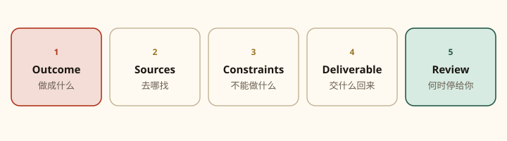

第 03 课
第一个 Bot 与五件套指令
岗位写清楚，任务写完整。模糊的「帮我看看」会得到模糊的忙乱。

创建第一个 Bot
- 侧边栏选 New，或按 Cmd/Ctrl+N。
- 在 New chat 里选 Create new agent。
- Grok Bot 会创建一个名为 New Agent 的 Bot 并打开它。
- 打开 Bot actions → Edit Profile，设置名字、title、description、头像。
- 用一件具体的事开始对话。
也可以从 Meet a future teammate 选一个建议同事，或选 Create your own。账号上限：Bot + 群聊合计 50 个。
已有 Bot 也可以建议或创建更专注的新同事。若你想保持编制很小，先开口确认再批量新建。
身份：短名字 + 一个主职 + 工作方式
岗位要可操作，不要「万能助手」。官方示例：
Bot 简介模板
Name: Piper Job: Product performance Description: 用我们的可观测性工具调查产品表现问题。保留链接和截图，把证据和假说分开，先回报影响最大的问题。永远不要改生产设置。
description 写长期为真的规则；具体任务写在对话里。
- Description：「未经审批不要发外部消息。」
- Message：「给这十二个账号起草跟进。」
任务五件套
- Outcome：做成什么？
- Sources：哪些应用、网站、文件、对话作数？
- Constraints：必须避开或先问你的事？
- Deliverable：交回来的成品是什么？
- Review point：何时停下给你看？
坏请求
帮我看看邮件
没有成品，没有边界，没有停点。Bot 只能猜你要摘要、要回复、还是要归档。
好请求
五件套写全
目标、来源、禁区、交付物、审批点都写上。你决策，Bot 执行。
把「帮我看看邮件」改成五件套
Outcome：找出今天需要我回复的客户邮件。 Sources：只看工作邮箱收件箱，今天到达的邮件；忽略内部 newsletter。 Constraints：不要发送、不要归档、不要标已读以外的操作。不确定是否客户来信时列成待确认，不要猜测。 Deliverable：一张表：发件人、主题、一句话要点、建议回复方向、紧急程度。 Review point：表做好就停。任何回复草稿先给我审，未经允许不得发送。
两个官方推荐的第一任务
五分钟、不需要连接器或网站登录：附上文档，然后发：
文档摘要
把这份文档总结成 5 条要点。另开一节列出每一个日期、决策和未决问题。每一项注明页码或章节。不要改源文件。
然后试一件在你工具里的活：
分析对比（需要仪表盘登录时再接管）
打开我们的分析仪表盘，对比本周与过去 4 周的新用户激活。指出最大的步骤级变化，并起草一份简短调查计划，附上相关图表链接。不要改任何仪表盘。若需要登录，请让我来登录。
composer 小习惯
在输入框：@ 可附上 Bot、群、Routine、连接器；/ 引用已保存的 Skill。第一课先会打字就够。
练习
现在就创建 Bot，用文档摘要任务跑一遍。改格式时把偏好说成「以后都这样」：例如「以后的周报：五条要点、来源链接内联、最后一节叫 Decisions needed。」